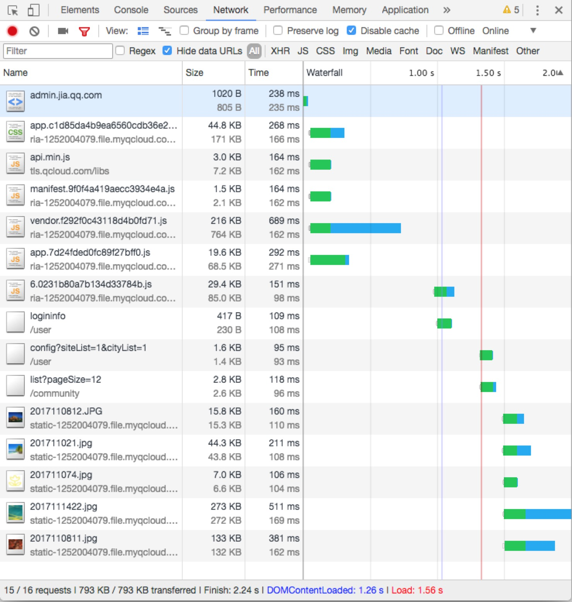

如何学习和应用VUE
以一个后台前端开发项目为例
授人以鱼，不如授人以渔
前端知识有下面几种
请按对个人的重要程度排序
- 框架API
- WEB基础知识(DOM,CSS,标准与规范)
- 浏览器兼容性
- 项目管理/体验优化
- 方法论/实践模式
- 代码设计思想/设计模式
这是我的排序
有疑问请举手
- 方法论/实践模式
- 项目管理/体验优化
- 代码设计思想/设计模式
- WEB基础知识(DOM,CSS,标准与规范)
- 框架API
- 浏览器兼容性
技术知识构成
实战讲解
项目概况
- 企鹅智家管理系统
- 规模：16个页面，其中5个有复杂交互
- 时间：9月24-10月20
- 前后台并行开发
- 3个前端，其中1个外包
- 要求兼容IE9
- 不算测试，完成构建,开发,联调,部署
项目实施概况
- 连带加班19个工作日
- 48个接口
- 110个模块文件(js,vue,less)
- 12524行代码
个人实施概况
- 项目开始前未使用过VUE
- 项目启动前3天时间熟悉框架
- 并行：项目启动前1天时间定规范
- 项目启动后2天时间协调成员做开发准备
- 并行：项目启动后2天时间搭建框架
- 1天时间写demo
- 7天时间用在Mock数据设计
- 2天时间解决静态文件部署问题
- 剩下7天时间，解决最复杂的10个模块中的5个
- 期间指导其他成员解决问题
如何在3天内学会VUE
并可以在别人面前装X
冰冻三尺，非一日之寒
思考：如果没有Vue,React,Angular等框架
如何基于MVC与函数式思想开发项目
- 3天只是真正认真看VUE相关API的时间
- 对MVC思想早已熟悉，并大量实践于以往项目
- 对VUE原理早有所理解
- 大致看过VUE基本Demo
- 了解过一些VUE周边技术栈
- 当然仅有这些，是不能用来决定项目架构的
DAY1：基础
- 再熟悉一遍VUE基本概念
- 方法论与代码设计思想指导文档阅读
- MVC的核心思想是观察者模式，属性监听
- 属性要可计算，可过滤，可观察
- 要了解如何渲染列表
- 事件与属性如何绑定
DAY2：模块化
- 需要组件化，那么如何注册组件？
- 组件需要通信，那么一般通信方式？（单向通信，prop，自定义事件，bus）
- 公共状态如何管理？(vuex)
- 其他独特功能：插槽
- 如何全局调用？混合，插件
DAY3：规范化
- 有快速脚手架吗？上手vue-cli
- 脚手架都有什么功能？熟悉内置webpack配置
- 如何通过路由组织模块？(vue-router)
- 不能一次加载所有js，如何按需加载？
项目启动日
好了，同学们，我刚刚过了下这个框架巴拉巴拉~~
技术选型
最重要的东西是什么？
时间！
时间！
时间！
项目启动会议，做技术协调
- Step1: 大家都已经熟悉了什么？
- Step2: 其他人一般都怎么做？
- Step3: 做个例子给大家看
省时间的诀窍
不要重复造轮子
- 资源入口1: awesome-vue
- github有很多awesome-xxx
上好轮子哪里找？
- 资源入口2: npms.io
- 注意不是 npmjs.com
轮子要持续积累和更新
例如使用百度脑图整理资源
技术定型
- 接口请求使用axios
- UI使用element ui
- 用vue-bus做广播
- 用echarts做图表
- 用lodash作为基本工具库
- 用vue-progressbar提供进度显示
- 个人开发spore-kit-xxx作补充
规范制定
Eslint
编辑器呈现警告
页面呈现警告
控制台呈现警告
关掉让我很不舒服的警告
CSS规范
- 可复用模块，ui模块遵循BEM
- 观察 element-ui 都是遵循 BEM 的
- 业务遵循5层架构
5层架构
- l-: 布局样式模块
- p-: pagelet 路由模块，不可复用
- v-: 可复用业务模块
- u-: UI模块样式
- k-: 工具样式
5层架构-pagelet
html规范
推荐pug
pug使用
- 注意组件属性都是折行书写的
- SublimeText pug 语法渲染有bug
- 不折行会渲染错误
- 折行有助于代码整洁度
目录规范
- 路由组件放在 src/pagelet
- 模块组件在 src/mods
- 数据模型在 src/model
- 路由组件在 src/router
- vuex store 在 src/store
- 工具函数在 src/util
- 请求统一包装在 src/io
额外规范
规范的意义
- 统一代码风格
- 减少出错
- 便于调试与维护
框架搭建
真正动手开发的步骤从这里开始
图标方案目标
- 引入简便
- 方便维护
- 方便开发
- 方案可复用到下个项目
webpack 配置
- 使用svg做图标
- 使用 svg-sprite-loader
图标引入
任务生成svg.js
图标使用
开发一个node接口生成图标数据
开发一个页面提供图标列表
数据Mock问题
- 本来有内网RAP服务
- 奈何外包无法访问
- 幸好之前有开发过spore-mock
数据Mock目标
- 结合 mockjs 生成随机数据
- node开发，简单代码配置接口
- 实现数据说明，简单暴力直接有效
- 代码在本地，为所欲为
Mock数据配置
chrome json-view
接口配置目标
- 可以快速切换调试环境
- 易配置，易修改
- 采用策略模式
接口集中管理


调试环境切换
接口请求目标
- 解决 Mock 接口请求数据与实际接口不一致的问题
- 易配置，易修改
- 统一处理信息提示
- 采用适配器模式
统一请求接口
定制接口服务
实际请求
广播限制
- 全局变量是魔鬼
- 全局广播也是
- 重写vue-bus，添加白名单
- 实现非vue组件发起广播
bus

bus白名单
调试体验优化
- AOP模式
- 在 env.js 配置 url 参数开关
logger
logger开关
进度体验优化
配置方案
- 统一接口请求的好处
- 在 request api 配置进度
- 在 vue-router 配置进度
vue-progress
按需加载模块

按需加载模块
JS:269Kb CSS:44.8Kb

其他杂事
反向代理
解决静态文件部署上传问题
IE9报错处理
替换polyfill
更换代码
项目在win环境启动缓慢
总结
大家先谈谈有什么感受
个人理解的修炼
- 将对一个前端产品的理解贯彻到项目中
- 完善规范，改进开发体验细节
- 应用设计模式在实际开发中
- VUE作者强在哪里？
感悟：如何提升自己
- 如果把前端码农比作农民
- 执着于框架的优劣，如同争论哪个拖拉机收割更快
- 能赚钱的农民要了解种植到销售的全流程
- 工程师也应当建立体系化思维
- 阿当的冷水泼的有道理，虽然部分偏激
- 框架和语言是为你服务的，不要反过来
- 造轮子来学东西，按需造轮子来做事
- 提升眼界，解放自己，做更有价值的事情